건축기사 (2016-10-01 기출문제)
1과목: 건축계획
1. 숑바르 드 로브의 주거면적 기준으로 옳은 것은?
- 병리기준: 6m2, 한계기준: 12m2
- 병리기준: 6m2, 한계기준: 14m2
- 병리기준: 8m2, 한계기준: 12m2
- 병리기준: 8m2, 한계기준: 14m2
(정답률: 82%)

2. 다음 중 사무소 건물의 스팬(Span) 결정요인과 가장 거리가 먼 것은?
- 지하층의 주차단위
- 냉 ‧ 난방 설비방식
- 층고에 의한 유효 채광범위
- 사무실의 작업단위(책상배열 단위)
(정답률: 65%)
3. 학교 운영방식 중 종합교실형에 관한 설명으로 옳지 않은 것은?
- 교실의 이용률이 높다.
- 교실의 순수율이 높다.
- 초등학교 저학년에 적합한 형식이다.
- 학생의 이동을 최소한으로 할 수 있다.
(정답률: 87%)
4. 주택의 현관에 대한 설명 중 옳지 않은 것은?
- 현관의 위치는 대지의 형태, 방위, 도로와의 관계에 영향을 받는다.
- 현관의 위치는 주택의 북측이 가장 좋으며 주택의 남측이나 중앙부분에는 위치하지 않도록 한다.
- 현관의 크기는 현관에서 간단한 접객의 용무를 겸하는 이외의 불필요한 공간을 두지 않는 것이 좋다.
- 현관의 크기는 주택의 규모와 가족의 수, 방문객 예상수 등을 고려한 출입량에 중점을 두어 계획하는 것이 바람직하다.
(정답률: 82%)
5. 아파트의 평면형식에 따른 분류에 속하지 않는 것은?
- 홀형
- 집중형
- 복도형
- 판상형
(정답률: 86%)
6. 미술관 건축계획에 관한 설명 중 옳은 것은?
- 하모니카 전시기법은 동일 종류의 전시물을 반복 전시할 경우 유리하다.
- 연속순회형식이 가장 이상적으로 반영되어 있는 건축물로는 뉴욕의 구겐하임 미술관이 있다.
- 미술관의 채광방식을 편측창 방식으로 할 경우 실 전체의 조도분포가 균일하여 별도의 조명설비가 필요 없다.
- 아일랜드 전시기법은 벽이나 천장을 직접 이용하여 전시물을 배치하는 기법으로 관람자의 시거리를 짧게 할 수 없다는 단점이 있다.
(정답률: 66%)
7. 사무소 건축에서 3중지역 배치(Triple Zone Layout)에 관한 설명으로 옳지 않은 것은?
- 서비스부분을 중심에 위치하도록 한다.
- 고층사무소 건축의 전형적인 해결방식이다.
- 부가적인 인공조명과 기계환기가 필요하다.
- 대여사무실을 포함하는 건물에 가장 적합하다.
(정답률: 64%)
8. 종합병원건축의 면적 배분에서 가장 많이 차지하는 부분은?
- 외래부
- 병동부
- 관리부
- 중앙진료부
(정답률: 89%)
9. 각 사찰에 대한 설명 중 옳지 않은 것은?
- 부석사의 가람배치는 누하진입 형식을 취하고 있다.
- 화엄사는 경사된 지형을 수단(數段)으로 나누어서 정지(整地)하여 건물을 적절히 배치하였다.
- 통도사는 산지에 위치하나 산지가람처럼 건물들을 불규칙하게 배치하지 않고 직교식으로 배치하였다.
- 봉정사 가람배치는 대지가 3단으로 나누어져 있으며 상단부분에 대웅전과 극락전 등 중요한 건물들이 배치되어 있다.
(정답률: 70%)
10. 건축물과 양식의 연결이 옳지 않은 것은?
- 노트르담 성당 –고딕 양식
- 샤르트르 성당 –고딕 양식
- 피사의 사탑 –바로크 양식
- 성 소피아 성당 –비잔틴 양식
(정답률: 60%)
11. 한국건축의 평면형식에 관한 설명으로 옳지 않은 것은?
- 쌍봉사 대웅전은 2칸 장방형 평면이다.
- 퇴 없이 측면이 단칸인 평면은 평안도 살림집에서 많이 나타난다.
- 중부지방 민가에서는 ㄱ자형 평면이 많은데 이를 곱은자집 이라고도 한다.
- 다각형 평면으로는 육각과 팔각이 많이 사용 되었는데 대개 정자에서 나타난다.
(정답률: 62%)
12. 전시실 순회방식에 관한 설명으로 옳지 않은 것은?
- 연속순회형식은 비교적 소규모 전시실에 적합하다.
- 중앙홀형식은 홀의 크기가 크면 중앙부 동선의 혼란이 있다.
- 갤러리 및 코리도형식은 복도 자체도 전시공간으로 이용이 가능하다.
- 갤러리 및 코리도형식은 각 실에 직접 들어갈 수 있는 점이 유리하다.
(정답률: 78%)
13. 극장의 음향계획에 관한 설명으로 옳지 않은 것은?
- 반사음의 집중이 없도록 한다.
- 무대 근처에는 음의 반사재를 취한다.
- 불필요한 음은 적당히 감쇠시키고 필요한 음의 청취에 방해가 되지 않게 한다.
- 천장계획에 있어서 돔(Dome)형은 음원의 위치 여하를 막론하고 음을 확산시키므로 바람직하다.
(정답률: 82%)
14. 우리나라 전통의 한식주택에서 문꼴부분의 면적이 큰 이유로 가장 적합한 것은?
- 겨울의 방한을 위해서
- 하기의 고온다습을 견디기 위해서
- 출입하는데 편리하게 하기 위해서
- 동기에 일조효과를 충분히 얻기 위해서
(정답률: 79%)
15. 페리(C.A.Perry)의 근린주구 이론에서 근린주구의 중심이 되는 시설은?
- 약국
- 대학교
- 초등학교
- 어린이놀이터
(정답률: 88%)
16. 단지계획에 있어서 교통계획의 주요 착안사항으로 옳지 않은 것은?
- 통행량이 많은 고속도로는 근린주구단위를 분리 시킨다.
- 근린주구단위 내부로의 자동차 통과진입을 최소화 한다.
- 2차 도로체계는 주도로와 연결하고 통과도로를 이루게 한다.
- 단지내의 교통량을 줄이기 위하여 고밀도지역은 진입구 주변에 배치시킨다.
(정답률: 55%)
17. 은행건축에 관한 설명으로 옳지 않은 것은?
- 금고실은 고객대기실에서 떨어진 위치에 둔다.
- 일반적으로 주출입문은 안여닫이로 함이 타당하다.
- 영업실의 면적은 은행원 1인당 최소 20m2 이상 되어야 한다.
- 은행실은 고객대기실과 영업실로 나누어지며 은행의 주체를 이루는 곳이다.
(정답률: 84%)
18. 다음 중 호텔 외관의 형태에 가장 크게 영향을 미치는 부분은?
- 관리부분
- 공공부분
- 숙박부분
- 설비부분
(정답률: 85%)
19. 공장 형식 중 분관식(Pavilion Type)에 관한 설명 으로 옳은 것은?
- 공간의 효율이 좋다.
- 공장의 신설, 확장이 용이하다.
- 공장건설을 병행할 수 없으므로 시공기간이 길다.
- 자재나 제품의 운반이 용이하고 흐름이 단순하다.
(정답률: 68%)
20. 도서관 출납시스템의 유형 중 열람자 자신이 서가에서 책을 꺼내어 책을 고르고 그대로 검열을 받지 않고 열람하는 형식은?
- 폐가식
- 반개가식
- 자유개가식
- 안전개가식
(정답률: 87%)
2과목: 건축시공
21. 벽면적 4.8m2 크기에 1.5B 두께로 붉은벽돌을 쌓고 자 할 때 벽돌 소요매수는? (단, 벽돌 크기는 190×90×57mm)
- 925매
- 963매
- 1,108매
- 1,245매
(정답률: 76%)
22. 비철금속에 관한 설명 중 옳지 않은 것은?
- 동에 아연을 합금시킨 일반적인 황동은 아연함유량이 40% 이하이다.
- 구조용 알루미늄 합금은 4~5%의 동을 함유하므로 내식성이 좋다.
- 주로 합금재료로 쓰이는 주석은 유기산에는 거의 침해되지 않는다.
- 아연은 철강의 방식용에 피복재로서 사용할 수 있다.
(정답률: 55%)
23. 토공사용 기계에 관한 설명 중 옳지 않은 것은?
- 파워쇼벨(Power Shovel)은 지반보다 낮은 곳을 깊게 팔 수 있는 기계로서 보통 약 5m까지 팔 수 있다.
- 드래그라인(Drag Line)은 기계를 설치한 지반보다 낮은 장소 또는 수중을 굴착하는데 사용된다.
- 불도저(BullDozer)는 일반적으로 흙의 표면을 밀면서 깎아 단거리 운반을 하거나 정지를 한다.
- 클램쉘(Clam Shell)은 수직굴착 등 일반적으로 협소한 장소의 굴착에 적합한 것으로 자갈 등의 적재에도 사용된다.
(정답률: 79%)
24. 보통콘크리트용 부순 골재의 원석으로서 가장 적합 하지 않은 것은?
- 현무암
- 안산암
- 화강암
- 응회암
(정답률: 68%)
25. 철골공사에서 크롬산 아연을 안료로 하고, 알키드 수지를 전색료로 한 것으로서 알루미늄 녹막이 초벌칠에 적당한 것은?
- 그래파이트 도료
- 징크로메이트 도료
- 광명단
- 알루미늄 도료
(정답률: 64%)
26. 지하연속벽 공법 중 슬러리월의 특징으로 옳은 것은?
- 인접건물의 경계선까지 시공이 불가능하다.
- 주변지반에 대한 영향이 크다.
- 시공시의 소음ㆍ진동이 크다.
- 일반적으로 차수효과가 뛰어나다.
(정답률: 70%)
27. 건축공사에서 제자리콘크리트 말뚝이나 수중콘크리트를 칠 경우 콘크리트 속에 2m 이상 묻혀 있도록 하여 콘크리트치기를 용이하게 하는 것은?
- 리바운드 체크
- 웰포인트
- 트레미관
- 드릴링 바스켓
(정답률: 72%)
28. 철골공사에서 용접봉의 내밀기, 이동 등을 기계화한 것으로, 서브머지드 아크용접법에 쓰이며, 피복재대신에 분말상의 플럭스를 쓰는 용접기기 명칭으로 옳은 것은?
- 직류아크용접기
- 교류아크용접기
- 자동용접기
- 반자동용접기
(정답률: 58%)
29. 창호의 기능검사 항목과 가장 거리가 먼 것은?
- 내동해성
- 내풍압성
- 기밀성
- 수밀성
(정답률: 69%)
30. 가이데릭(Guy Derick)에 대한 설명 중 옳지 않은 것은?
- 기계대수는 평면높이의 가동범위ㆍ조립능력과 공기에 따라 결정한다.
- 붐(Boom)의 길이는 마스트의 길이보다 길다.
- 볼 휠(Ball Wheel)은 가이데릭 하단부에 위치한다.
- 붐(Boom)의 회전각은 360°이다.
(정답률: 70%)
31. 다음 중 화성암에 속하지 않는 것은?
- 화강암
- 섬록암
- 안산암
- 점판암
(정답률: 63%)
32. 발주자에 의한 현장관리로 볼 수 없는 것은?
- 착공신고
- 하도급계약
- 현장회의 운영
- 클레임 관리
(정답률: 71%)
33. 멤브레인 방수공법에 해당되지 않는 것은?
- 아스팔트방수
- 콘크리트 구체방수
- 도막방수
- 합성고분자 시트방수
(정답률: 65%)
34. 벽돌공사에 관한 설명으로 옳지 않은 것은?
- 치장줄눈은 줄눈모르타르가 충분히 굳은 후에 줄눈파기를 한다.
- 벽돌쌓기에서 하루 쌓기높이는 1.2m를 표준으로 한다.
- 붉은벽돌은 벽돌쌓기 하루 전에 물호스로 충분히 젖게 하여 표면에 습도를 유지한 상태로 준비한다.
- 세로줄눈의 모르타르는 벽돌 마구리면에 충분히 발라 쌓도록 한다.
(정답률: 60%)
35. 콘크리트 보수 및 보강에 관한 설명으로 옳지 않은 것은?
- 주입공법은 작업의 신속성을 위하여 균열부위에 주입파이프를 설치하여 보수재를 고압고속으로 주입하는 공법이다.
- 표면처리공법은 균열 0.2mm 이하 부위에 수지로 충전하고 균열표면에 보수재료를 씌우는 공법이다.
- 충전공법 사용재료는 실링재, 에폭시수지 및 폴리머 시멘트모르타르 등이 있다.
- 탄소섬유접착공법은 탄소섬유판을 에폭시수지 등으로 콘크리트 면에 부착시켜 탄소섬유판의 높은 인장 저항성으로 콘크리트를 보강하는 공법이다.
(정답률: 50%)
36. 프리스트레스트 콘크리트 공사에서 강재의 부식저항성과 관련하여 비빌 때에 프리스트레스트 그라우트 중에 포함되는 염화물 이온의 총량은 얼마 이하를 원칙으로 하는가?
- 0.1kg/m3
- 0.2kg/m3
- 0.3kg/m3
- 0.4kg/m3
(정답률: 75%)
37. 도막방수에 관한 설명으로 옳지 않은 것은?
- 도막방수의 바탕처리는 시멘트액체방수에 준하여 실시한다.
- 도막방수에는 노출공법과 비노출공법이 있다.
- 아크릴계 도막방수는 인화성이 강하므로 시공시화기를 엄금한다.
- 용제형 도막방수는 강풍이 불 경우 방수층 접착이 불량하다.
(정답률: 57%)
38. 건축공사비의 원가구성 항목이 아닌 것은?
- 재료비
- 노무비
- 경비
- 도급공사비
(정답률: 73%)
39. 화살선형 네트워크의 화살표에 대한 설명 중 옳지 않은 것은?
- 화살표 밑에는 계획작업 일수를 숫자로 기재한다.
- 더미(Dummy)는 화살점선으로 표시한다.
- 화살표 위에는 결합점 번호를 기재한다.
- 화살표의 길이는 특정한 의미가 없다.
(정답률: 67%)
40. 타일공사에 관한 설명 중 옳은 것은?
- 모자이크 타일의 줄눈나비의 표준은 5mm이다.
- 벽체타일이 시공되는 경우 바닥타일은 벽체타일을 붙이기 전에 시공한다.
- 타일을 붙이는 모르타르에 시멘트 가루를 뿌리면 백화가 방지된다.
- 치장줄눈은 24시간이 경과한 뒤 붙임모르타르의 경화정도를 보아 시공한다.
(정답률: 45%)
3과목: 건축구조
41. 단면 bw×d=300mm × 550mm 콘크리트 보 부재의 최소인장철근량으로 옳은 것은? (단, fck=40MPa ,fy=400MPa )(오류 신고가 접수된 문제입니다. 반드시 정답과 해설을 확인하시기 바랍니다.)
- 495mm2
- 577mm2
- 652mm2
- 725mm2
(정답률: 40%)
42. 그림과 같은 지상 4층 건물에 기둥 (C1)의 1층에 발생 하는 계수하중에 의한 축력을 면적법으로 구하면? (단, 보 및 기둥 자중은 무시하며, 바닥하중(지붕하중 동일)은 고정하중은 5kNm2, 활하중은 3kNm2이며 활하중 저감은 무시한다.)
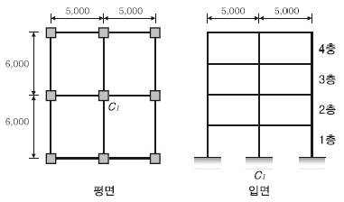
- 1,296kN
- 1,364kN
- 1,412kN
- 1,498kN
(정답률: 50%)
43. 다음 조건을 만족하는 철근콘크리트 벽체의 최소 수직철근량과 최소 수평철근량은 얼마인가?
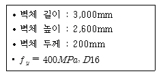
- 수직철근량: 720mm2, 수평철근량: 1,020mm2
- 수직철근량: 730mm2, 수평철근량: 1,020mm2
- 수직철근량: 720mm2, 수평철근량: 1,040mm2
- 수직철근량: 730mm2, 수평철근량: 1.040mm2
(정답률: 50%)
44. 건축구조용압연강이라 하며, 건축물의 내진성능을 확보하기 위하여 항복점의 상한치 제한 등에 의한 품질의 편차를 줄이고, 용접성 및 냉간 가공성을 향상시킨 강재는?
- SM강재
- TMCP강재
- SS강재
- SN강재
(정답률: 70%)
45. x- x 축에 대한 단면2차모멘트를 구하면?
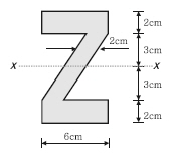
- 76cm4
- 258cm4
- 428cm4
- 500cm4
(정답률: 55%)
46. 보통골재를 사용한 철근콘크리트 보에 콘크리트 압축강도(fck=24MPa ), 철근의 항복강도(fy=400MPa )의 재료를 사용할 경우 탄성계수비는 약 얼마인가? (단, Es=200,000MPa )
- 6.75
- 7.75
- 8.25
- 9.15
(정답률: 47%)
47. 철근콘크리트 보에서 고정하중과 활하중에 의하여 구한 설계모멘트 Mu=540kN⋅m 라면 이때의 공칭강도를 구하면? (단, 중립축의 깊이(c)는 220mm, 최외단 압축 연단에서 최외단 인장철근까지의 거리(dt)는 550mm, 철근의 항복강도(fy)는 400MPa)
- 661kN⋅m
- 754kN⋅m
- 798kN⋅m
- 832kN⋅m
(정답률: 31%)
48. 그림과 같은 구조물에서 휨모멘트가 작용하지 않는 부재( M =0 )는?
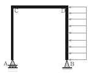
- 없음
- CD부재
- BD부재
- AC부재
(정답률: 60%)
49. 그림과 같은 구조에서 C단에 발생하는 휨모멘트는?
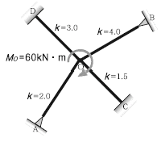
- 2.4kN⋅m
- 5kN⋅m
- 6.5kN⋅m
- 10kN⋅m
(정답률: 60%)
50. 용접 H형강 H-450×450×20×28의 플랜지 및 웨브에 대한 판폭두께비를 구하면?
- 플랜지 : 16.07, 웨브 : 14.07
- 플랜지 : 16.07, 웨브 : 19.7
- 플랜지 : 8.04, 웨브 : 14.07
- 플랜지 : 8.04, 웨브 : 19.7
(정답률: 41%)
51. 지진계에 기록된 진폭을 진원의 깊이와 진앙까지의 거리 등을 고려하여 지수로 나타낸 것으로 장소에 관계 없는 절대적 개념의 지진크기를 말하는 것은?
- 규모
- 진도
- 진원시
- 지진동
(정답률: 76%)
52. 그림과 같은 2Ls-90×90×7 조립압축재의 단면2차 반경 rY 는 얼마인가? (단, 개재의 중심축에 대한 단면2차반경 ry는 27.6mm, cy24.6mm)
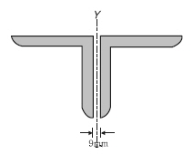
- 38.5mm
- 40.1mm
- 52.2mm
- 58.mm
(정답률: 48%)
53. 강도설계법에서 흙에 접하는 기둥의 최소 피복두께 기준으로 옳은 것은? (단, 프리스트레스하지 않는 부재의 현장치기 콘크리트로서 D25인 철근임)
- 20mm
- 30mm
- 40mm
- 50mm
(정답률: 49%)
54. 지진하중 설계 시 밑면전단력과 관계없는 것은?
- 유효건물중량
- 중요도계수
- 지반증폭계수
- 가스트계수
(정답률: 70%)
55. 그루브용접부에서 A와 D 부위의 명칭으로 옳은 것은?
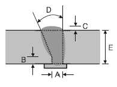
- A: 루트간격, D: 개선각
- A: 루트면, D: 유효목두께
- A: 루트간격, D: 보강살높이
- A: 루트면, D: 개선각
(정답률: 70%)
56. 그림과 같은 단순보에서 중앙점의 처짐량이 2cm로 나타났다. 만일 보의 춤을 2배로 크게 하면 처짐량은 얼마로 되는가?
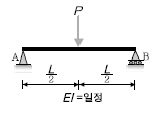
- 1cm
- 0.5cm
- 0.25cm
- 0.125cm
(정답률: 53%)
57. 그림과 같은 구조물의 판별로 옳은 것은? (단, 그림의 하부지점은 고정단임)
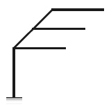
- 불안정
- 정정
- 1차부정정
- 2차부정정
(정답률: 73%)
58. 그림과 같은 구조물에 작용하는 4개의 힘이 평형을 이룰 때 F의 크기 및 거리 x는?
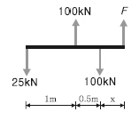
- F=25kN , x=1m
- F=50kN , x=1m
- F=25kN , x=0.5m
- F=50kN , x=0.5m
(정답률: 69%)
59. 그림과 같은 T형보( G1 )의 유효폭 B의 값은? (단, 슬래브 두께는 120mm, 보의 폭은 300mm)
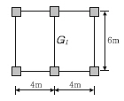
- 150cm
- 192cm
- 222cm
- 400cm
(정답률: 46%)
60. 말뚝머리지름이 400mm인 기성콘크리트 말뚝을 시공 할 때 그 중심간격으로 가장 적당한 것은?
- 750mm
- 800mm
- 900mm
- 1,000mm
(정답률: 57%)
4과목: 건축설비
61. 엘리베이터 카(Car)가 최상층이나 최하층에서 정상 운행위치를 벗어나 그 이상으로 운행하는 것을 방지하기 위해 설치하는 전기적 안전장치는?
- 조속기
- 가이드 레일
- 전자 브레이크
- 최종 리밋 스위치
(정답률: 76%)
62. 다음과 같은 특징을 갖는 배선공사는?
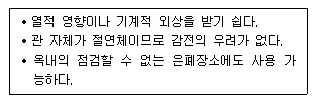
- 금속관 공사
- 버스덕트 공사
- 경질비닐관 공사
- 라이팅덕트 공사
(정답률: 69%)
63. 건축물의 에너지절약을 위한 기계부분의 권장사항으로 옳지 않은 것은?
- 냉방기기는 전력피크부하를 줄일 수 있도록 한다.
- 난방순환수 펌프는 가능한 한 대수제어 또는 가변속제어방식을 채택한다.
- 폐열회수를 위한 열회수설비를 설치할 때에는 중간기에 대비한 바이패스(By-Pass)설비를 설치한다.
- 위생설비 급탕용 저탕조의 설계온도는 65℃ 이하로 하고 필요한 경우에는 부스터히터 등으로 승온하여 사용한다.
(정답률: 53%)
64. 전양정 24m, 양수량 13.8m3/h, 효율 60%일 때 펌프의 축동력은?
- 0.5kW
- 1.0kW
- 1.5kW
- 3.0kW
(정답률: 54%)
65. 주철제 보일러에 대한 설명 중 옳지 않은 것은?
- 재질이 약하여 고압으로는 사용이 곤란하다.
- 섹션(Section)으로 분할되므로 반입이 용이하다.
- 재질이 주철이므로 내식성이 약하여 수명이 짧다.
- 규모가 비교적 작은 건물의 난방용으로 사용된다.
(정답률: 68%)
66. 베르누이(Bernoulli)의 정리를 가장 올바르게 표현한 것은?
- 유체가 갖고 있는 운동에너지는 흐름 내 어디에서나 일정하다.
- 유체가 갖고 있는 운동에너지와 중력에 의한 위치 에너지의 총합은 흐름 내 어디에서나 일정하다.
- 유체가 갖고 있는 운동에너지, 중력에 의한 위치 에너지의 총합은 흐름 내 어디에서나 압력에너지와 같다.
- 유체가 갖고 있는 운동에너지, 중력에 의한 위치 에너지 및 압력에너지의 총합은 흐름 내 어디에서나 일정하다.
(정답률: 66%)
67. 공기조화방식 중 팬코일유닛 방식에 관한 설명으로 옳지 않은 것은?
- 전수방식에 속한다.
- 덕트샤프트와 스페이스가 반드시 필요하다.
- 각 실에 수배관으로 인한 누수의 우려가 있다.
- 각 실의 유닛은 수동으로도 제어할 수 있고, 개별제어가 쉽다.
(정답률: 67%)
68. 온수난방에 관한 설명으로 옳지 않은 것은?
- 증기난방에 비하여 예열시간이 짧다.
- 온수의 현열을 이용하여 난방하는 방식이다.
- 한랭지에서 운전 정지 중에 동결의 우려가 있다.
- 온수의 순환방식에 따라 중력식과 강제식으로 구분 할 수 있다.
(정답률: 76%)
69. 급탕설비에 관한 설명으로 옳지 않은 것은?
- 냉수, 온수를 혼합 사용해도 압력차에 의한 온도 변화가 없도록 한다.
- 배관은 적정한 압력손실 상태에서 피크시를 충족 시킬 수 있어야 한다.
- 도피관에는 압력을 도피시킬 수 있도록 밸브를 설치하고 배수는 직접배수로 한다.
- 밀폐형 급탕시스템에는 온도상승에 의한 압력을 도피시킬 수 있는 팽창탱크 등의 장치를 설치한다.
(정답률: 73%)
70. 주위온도가 일정온도 이상으로 되면 동작하는 자동화재탐지설비의 감지기는?
- 이온화식 감지기
- 차동식 스폿 감지기
- 정온식 스폿 감지기
- 광전식 스폿 감지기
(정답률: 80%)
71. 다음 설명에 알맞은 전동기는?
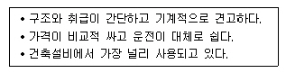
- 유도전동기
- 동기전동기
- 직류전동기
- 정류자전동기
(정답률: 69%)
72. 고가수조 급수방식에서 물 공급순서로 옳은 것은?
- 상수도 → 저수조 → 펌프 → 고가수조 → 위생기구
- 상수도 → 고가수조 → 펌프 → 저수조 → 위생기구
- 상수도 → 고가수조 → 저수조 → 펌프 → 위생기구
- 상수도 → 저수조 → 고가수조 → 펌프 → 위생기구
(정답률: 70%)
73. 습공기의 상태변화에 관한 설명으로 옳지 않은 것은?
- 가열하면 엔탈피는 증가한다.
- 냉각하면 비체적은 감소한다.
- 가열하면 절대습도는 증가한다.
- 냉각하면 습구온도는 감소한다.
(정답률: 79%)
74. 흡음 및 차음에 관한 설명으로 옳지 않은 것은?
- 벽의 차음성능은 투과손실이 클수록 높다.
- 차음성능이 높은 재료는 대부분 흡음성능도 높다.
- 벽의 차음성능은 사용재료의 면밀도에 크게 영향을 받는다.
- 벽의 차음성능은 동일 재료에서도 두께와 시공법에 따라 다르다.
(정답률: 77%)
75. 어느 점광원에서 1[m] 떨어진 곳의 직각면 조도가 200[lx]일 때 이 광원에서 2[m] 떨어진 곳의 직각면 조도는?
- 25[lx]
- 50[lx]
- 100[lx]
- 200[lx]
(정답률: 80%)
76. 다음의 옥내소화전 설비에 관한 설명 중 ( )안에 알맞은 것은?
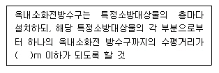
- 25
- 30
- 35
- 40
(정답률: 55%)
77. 배수수직관 내의 압력변화를 방지 또는 완화하기위해 배수수직관으로부터 분기 ㆍ 입상하여 통기수직관에 접속하는 도피통기관은?
- 각개통기관
- 신정통기관
- 결합통기관
- 루프통기관
(정답률: 41%)
78. 비상콘센트설비에 관한 설명으로 옳지 않은 것은?
- 층수가 6층 이상인 특정소방대상물의 전층에 설치하여야 한다.
- 전원회로는 각층에 있어서 2 이상이 되도록 설치하는 것을 원칙으로 한다.
- 비상콘센트는 바닥으로부터 높이 0.8m 이상 1.5m 이하의 위치에 설치한다.
- 소방시설 중 화재를 진압하거나 인명구조활동을 위하여 사용하는 소화활동설비에 속한다.
(정답률: 42%)
79. 에스컬레이터에 관한 설명으로 옳지 않은 것은?
- 수송량에 비해 점유면적이 작다.
- 수송능력이 엘리베이터보다 작다.
- 대기시간이 없고 연속적인 수송설비이다.
- 연속운전되므로 전원설비에 부담이 적다.
(정답률: 75%)
80. 공기조화설비에서 사용되는 고속덕트에 관한 설명으로 옳은 것은?
- 소음 및 진동이 발생하지 않는다.
- 공기혼합상자를 설치하여야 한다.
- 덕트 설치공간을 작게 할 수 있다.
- 공장이나 창고에는 적용할 수 없다.
(정답률: 47%)
5과목: 건축법규
81. 건축법령상 제2종 근린생활시설에 속하는 것은?
- 도서관
- 미술관
- 한의원
- 일반음식점
(정답률: 64%)
82. 문화 및 집회시설 중 공연장의 개별관람석의 출구 다음과 같이 설치하였을 경우, 옳지 않은 것은? (단, 개별관람석의 바닥면적이 800m2인 경우)
- 출구는 모두 바깥여닫이로 하였다.
- 관람석별로 2개소 이상 설치하였다.
- 각 출구의 유효너비를 1.6m로 하였다.
- 각 출구의 유효너비의 합계를 4.5m로 하였다.
(정답률: 63%)
83. 전용주거지역이나 일반주거지역에서 건축물을 건축하는 경우, 건축물의 높이 9m 이하인 부분은 정북(正北) 방향으로의 인접대지경계선으로부터 최소 얼마 이상 띄어 건축하여야 하는가?
- 1m
- 1.5m
- 2m
- 3m
(정답률: 76%)
84. 다음은 건축법령상 지하층의 정의 내용이다. ( ) 안에 알맞은 것은?
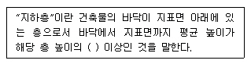
- 2분의 1
- 3분의 1
- 3분의 2
- 4분의 1
(정답률: 80%)
85. 그림과 같은 거실의 평균 반자높이는? (단, 단위는m)
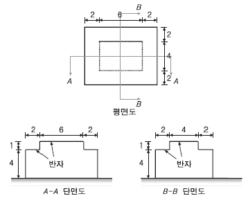
- 4.3m
- 4.6m
- 4.9m
- 5.2m
(정답률: 56%)
86. 건축물의 대지는 원칙적으로 최소 얼마 이상이 도로에 접하여야 하는가? (단, 자동차만의 통행에 사용되는 도로는 제외)
- 1m
- 2m
- 3m
- 4m
(정답률: 75%)
87. 주차법령상 다음과 같이 정의되는 주차장의 종류는?
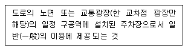
- 노외주차장
- 노상주차장
- 부설주차장
- 기계식주차장
(정답률: 69%)
88. 주거지역의 세분 중 중층주택을 중심으로 편리한 주거환경을 조성하기 위하여 필요한 지역은?
- 제1종 일반주거지역
- 제2종 일반주거지역
- 제1종 전용주거지역
- 제2종 전용주거지역
(정답률: 69%)
89. 국토의 계획 및 이용에 관한 법령에 따른 용도지구에 속하지 않는 것은?
- 보존지구
- 취락지구
- 시설용지지구
- 특정용도제한지구
(정답률: 40%)
90. 시설면적이 9,000m2 인 종합병원에 설치하여야 하는 부설주차장의 최소 주차대수는?
- 45대
- 60대
- 90대
- 100대
(정답률: 57%)
91. 다음 중 기계식 주차장의 세분에 속하지 않는 것은?
- 지하식
- 지평식
- 건축물식
- 공작물식
(정답률: 65%)
92. 건축법령상 건축을 하는 경우 조경 등의 조치를 하지 아니할 수 있는 건축물 기준으로 옳지 않은 것은? (단, 면적이 200m2 이상인 대지에 건축을 하는 경우)
- 축사
- 녹지지역에 건축하는 건축물
- 연면적의 합계가 2,000m2 미만인 공장
- 면적 5,000m2 미만인 대지에 건축하는 공장
(정답률: 53%)
93. 국토의 계획 및 이용에 관한 법령상 일반상업지역에서 건축할 수 있는 건축물은?
- 묘지관련시설
- 자원순환관련시설
- 의료시설 중 요양병원
- 자동차관련시설 중 폐차장
(정답률: 63%)
94. 건축허가신청에 필요한 기본설계도서 중 건축계획서에 표시하여야 할 사항으로 옳지 않은 것은?
- 주차장 규모
- 공개공지 및 조경계획
- 건축물의 용도별 면적
- 지역 ‧ 지구 및 도시계획사항
(정답률: 51%)
95. 건축법령상 다음과 같이 정의되는 용어는?
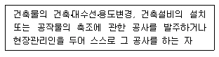
- 건축주
- 건축사
- 설계자
- 공사시공자
(정답률: 77%)
96. 국토교통부장관이 정한 범죄예방 기준에 따라 건축 하여야 하는 대상 건축물에 속하지 않는 것은?
- 수련시설
- 공동주택 중 연립주택
- 업무시설 중 오피스텔
- 숙박시설 중 다중생활시설
(정답률: 39%)
97. 너비 8m 미만인 도로의 모퉁이에 위치한 대지의 도로모퉁이 부분의 건축선은 그 대지에 접한 도로경계선의 교차점으로부터 도로경계선에 따라 다음의 표에 따른 거리를 각각 후퇴한 두 점을 연결한 선으로 한다. ( )안의 숫자로 옳은 것은? (단, 도로의 교차각 90°미만인 경우)
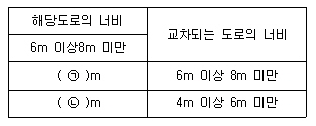
- ㉠ 2, ㉡ 2
- ㉠ 3, ㉡ 2
- ㉠ 3, ㉡ 3
- ㉠ 4, ㉡ 3
(정답률: 67%)
98. 건축물의 내부에 설치하는 피난계단의 구조에 관한기준 내용으로 옳지 않은 것은?
- 계단은 내화구조로 하고 피난층 또는 지상까지 직접 연결되도록 할 것
- 계단실의 실내에 접하는 부분의 마감은 불연재료 또는 준불연재료로 할 것
- 건축물의 내부에서 계단실로 통하는 출입구의 유효 너비는 0.9m 이상으로 할 것
- 계단실은 창문ㆍ출입구 기타 개구부를 제외한 당해 건축물의 다른 부분과 내화구조의 벽으로 구획할 것
(정답률: 70%)
99. 국토의 계획 및 이용에 관한 법령상 다음과 같이 정의되는 용어는?
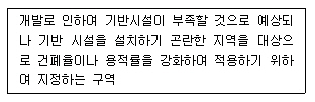
- 시가화조정구역
- 개발밀도관리구역
- 기반시설부담구역
- 지구단위계획구역
(정답률: 65%)
100. 다음은 건축물의 사용승인에 관한 기준 내용이다.
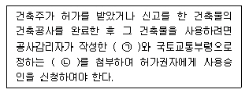
- ㉠ 설계도서, ㉡ 시방서
- ㉠ 시방서, ㉡ 설계도서
- ㉠ 감리완료보고서, ㉡ 공사완료도서
- ㉠ 공사완료도서, ㉡ 감리완료보고서
(정답률: 77%)